long exact sequence of a serre fibration
1. Proposition
Let  be a serre fibration,
be a serre fibration,  and
and
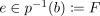
a fibre. Then there exists natural boundary maps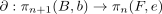
such that
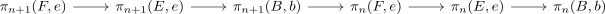
is exact for
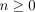
:see also:
- exact sequence of sets, where the base point of
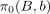
is given by the path component of
2. Proof
Let
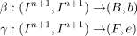
be elements in
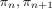
Then
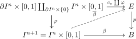
commutes as
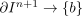
where
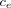
is the constant mapUsing
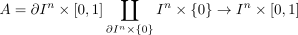
as homotopy equivalence (todo) we may find a solution of the lifting problem up to homotopy relative to
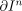
(cf. todo)Therefore we get a well defined element
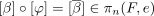
2.1. exactness at
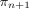
note that
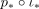
is trivial
Suppose
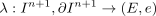
satisfies

then
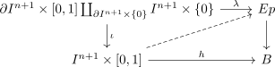
Then
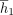
defines an element in such that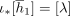
2.2. exactness at
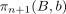
Let $(λ: In+1, ∂ In+1) → (E,{)
We want to show that
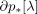
is trivial
Then
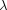
itself solves the lifting problem defining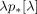
therefore
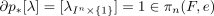
Let
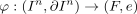
be such that
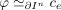
in
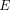
Then
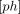
is a preimage of [
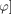
under
2.3. exactness at
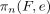
- similar